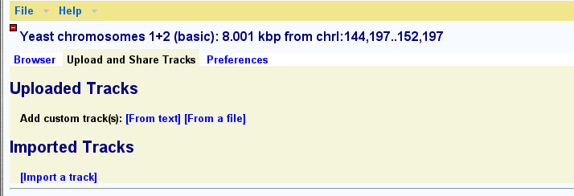

Generic Genome Browser: General Help
These are general instructions for using the Generic Genome Browser
software. The colors, tracks and other features of the server you are
accessing these help pages from may be different, depending on any
site-specific customization the local administrators may have applied.
To select a region of the genome to view, enter its name in the text
field labeled "Landmark or Region". Recognized types of names are
under the control of the administrator, but usually the following
names are accepted:
- a chromosome name
- For genomes that have been assembled into chromosome-length
segments, you can enter the name of the chromosome. The
chromosome name follows the conventional nomenclature for the
species. For example, C. elegans chromosomes are
indicated using roman numerals, such as III,
D. melanogaster uses chromosome arms such as 2L and 2R,
while H. sapiens uses arabic numbers such as 9.
- a chromosome band
- For genomes that have named banding patterns, you can use the standard
nomenclature such as 1q13.
- a gene name
- You can enter the name of a gene using the standard nomenclature
for that species.
- a contig or clone name
- You can enter the name of a structural landmark such as a
cosmid, BAC or contig.
- an accession number
- You can enter a GenBank or EMBL accession number.
- protein names, primer names, ORF IDs, author names...
- At the discretion of the administrator of the database, other
identifiers can be entered. See the examples listed at the
top of the browser page for hints.
You may use the wildcard character "*" if you are unsure of the
landmark name. If the requested landmark is not found, the browser
will display a message to this effect.
The Overview and Detail Panels
If the landmark is found in the database, the browser will display the
region of the genome it occupies. The region is displayed in three
graphical panels:

- overview panel
- This panel displays the genomic context, typically an entire
assembled chromosome or a large portion of the sequence
assembly such as a scaffold or contig. At the administrators'
discretion, certain important landmarks, such as a well-known
genetic markers or cytogenetic bands can be placed in this view.
A highlighted rectangle indicates the region of the genome that is
displayed in the detail panel and corresponds to the region found
when you search for a gene or other feature. This rectangle may appear as
a single line if the detailed region is relatively small.
- region panel
- This panel displays a portion of the genome surrounding the
region of interest. It gives the context for the search region.
At the administrator's discretion, there may be tracks of information
in the region panel.
- detail panel
- This panel displays a zoomed-in view of the genome corresponding
to the overview's selection rectangle. The detail panel consists of
one or more tracks showing annotations and other features that
have been placed on the genome. The detail panel is described
at length later.
Specifying the Landmark Class
At the administrator's option, some kinds of landmarks may have to be
qualified using the format prefix:landmark. For example, a
clone named "c23" might need to be searched for using "clone:c23".
Viewing a Precise Region around a Landmark
You can view a precise region around a landmark using the notation
landmark:start..stop, where start and stop are
the start and stop positions of the sequence relative to the landmark.
The beginning of the feature is position 1. In the case of complex
features, such as genes, the "beginning" is defined by the database
administrator. For example, in the C. elegans data set,
position 1 of a predicted gene is the AUG at the beginning of the CDS,
so to view the region that begins 100 base pairs upstream of the AUG
ends 500 bases downstream of it, you would search for
mek-1:-99..500.
This offset notation will work correctly for negative strand features
as well as positive strand features. The coordinates are always
relative to the feature itself.
To offset relative to a qualified feature name, just include the type
name, as in PCR_Product:sjj_K08A8.1:-500..500 (note that this
particular example only works with the C. elegans database).
Searching for Keywords and Multiple Hits
Anything that you type into the "Landmark or Region" textbox that
isn't recognized as the name of a landmark will be treated as a full
text search across the feature database. This will find comments or
other feature notations that match the typed text. Depending on how
the database is set up, you may find gene names, gene functions,
author names, or bibliographic references.
If more than one landmark or keyword search is found, then the browser
will display a graphical representation of the whole genome and
summarize the various hits in a table. You can click on one of the
landmarks in either the graphical display or the table in order to
view it in the detail view:

Autocompletion
At the discretion of the administrator, searching autocompletion may
be active. In this case, a menu of possible choices will pop up as you
type in landmark names and other search terms. Because autocomplete is
limited to exact name matches, you may still find hits via keyword
search even if no autocomplete matches are recommended.

Once a region is displayed, you can navigate through it in a number of
ways:
- Click and drag on any of the rulers
- Any of the rulers that show base position, including those in the
overview, region and detail panels, are clickable. Click once to
recenter the view at the desired position, or click and drag to
select a region.
- Scroll left or right with the <<, <,
> and >> buttons
- These buttons, which appear in the "Scroll/Zoom" section of the
screen, and at the top right and left corners of the detail panel,
will scroll the detail panel to the left or right. The
<< and >> buttons scroll an entire
screen's worth, while < and >> scroll a
half screen.
- Zoom in or out using the "Show XXX Kbp" menu.
- Use menu that appears in the center of the "Scroll/Zoom" section
to change the zoom level. The menu item name indicates the
number of base pairs to show in the detail panel. For example,
selecting the item "100 Kbp" will zoom the detail panel so as
to show a region 100 Kbp wide.
- Make fine adjustments on the zoom level using the "-" and
"+" buttons.
- Press the - and + buttons to change the zoom level
by small increments (usually 10-20%, depending on how the
browser is configured).
- Flip the orientation by selecting the "flip" checkbox
- To flip the browser display so that the minus strand points
to the right, select the "flip" checkbox. This is sometimes
useful for looking at minus strand genes.
- Recenter the detail panel by clicking on its scale
- The scale at the top of the detail panel is live. Clicking on
it will recenter the detail panel around the location you
clicked. This is a fast and easy way to make fine adjustments
in the displayed region.
- Mouse over a feature to get more information about it
- Mousing over a feature will usually bring up a text bubble
that contains more identifying information about the feature.
- Click on a feature to see its details
- Clicking on a feature in the detail view will link to a page
that displays detailed information on it. This could be a page on
the browser's web site, or a page on another resource somewhere
on the web.
The detailed view is composed of a number of distinct tracks which
stretch horizontally from one end of the display to another. Each
track corresponds to a different type of genomic feature, and is
distinguished by a distinctive graphical shape and color.

Each track has a descriptive name printed above it, and a series of
small control icons to the left of the name.
- To reorder a track, click on its name and drag it up or down to the
desired position.
- To minimize a track, click on its "-" icon. The track will
minimize down to the name only and the icon will change to a
"+". Click on the icon again to maximize the track.
- To turn off a track, click on its "x" icon. The track will
disappear entirely, but can be reenabled by selecting its name in
the track table described below.
- To share a track such that the track data can be imported
into another instance of the browser, click on the icon that looks
like a set of radio waves. This will pop up a window containing a
link that you can cut and paste into another instance of the
Generic Genome Browser. Please see Importing
Tracks for more details.
- To get more information about track, mouse over its "?"
icon. This will bring up any descriptive information that the site
administrator has provided for the track. In some cases, the
administrator may not have provided this information.
- To change a track's appearance, click on the "?" icon. This
will present you with a pop-up window that allows you to change
many aspects of the track, including its height, display style,
and color.
This browser supports uploading your own data set tracks. You can then
share these tracks with other individuals and groups.
Uploading New Data Sets
To upload tracks to the browser, click on the link labeled "Upload and
Share Tracks" located towards the top of the screen. This will open a
section similar to the one shown here:

Click on the link marked "[From text]". This will open a text editing
field. Type in one or more lines like the following and press the
"Upload" button.
chrI 10000 20000
chrI 12000 21000
chrII 8000 20000


The date at which the uploaded file was created or last modified is
printed next to its name. If there are a manageable number of
annotated areas, GBrowse will create links that allow you to jump
directly to them.
You may upload as many files as you wish, but be advised that the
performance of the browser may decrease if there are many large
uploads to process.
Viewing 3d Party Annotations
To view 3d party annotations, the annotations must be published on a
reachable web server and you must know the annotation file's URL.

At the bottom of the browser window is a text box labeled "Enter
Remote Annotation URL". Type in the URL and then press "Update URLs".
The system will attempt to upload the indicated URL. If successful,
the data will appear as one or more new tracks. Otherwise you will
be alerted with an error message.
You may add as many remote URLs as you wish. To delete one, simply
erase it and press "Update URLs" again.
Another way to upload your own features is by adding an "add" argument
to the gbrowse URL. For example, this URL will create a track named
"MyDeletions" containing a feature named "Deletion3". Deletion3
occupies the region on chromosome 3 between 10,050,000 and 10,051,000:
$GBROWSE?add=chr3+MyDeletions+Deletion3+10050000..10051000
You can have as many "add" options as you like:
$GBROWSE?add=chr3+MyDeletions+Deletion3+10050000..10051000;add=chr3+MyDeletions+Deletion4+950000..960000
The format is:
reference+trackName+featureName+start..stop,start..stop,start..stop ...
where "reference" is the name of the landmark that start and stop are
relative to. You can use a chromosome name, a contig name, a gene
name, or anything else that this browser recognizes in the search
box. "trackName" is the name of the track to upload, "featureName" is
the name of the feature you are uploading, and "start..stop" are the
start and end coordinates relative to "reference". For multisegmented
features, specify multiple start..stop pairs separated by commas.
For more control over the way quick upload features appear, specify the "style" option to the URL:
$GBROWSE?style=MyDeletions+glyph=arrow+double=1+fgcolor=blue
This says to configure the "MyDeletions" track with the following options:
glyph=arrow
double=1
fgcolor=blue
See the uploaded annotation help
file for more details
.